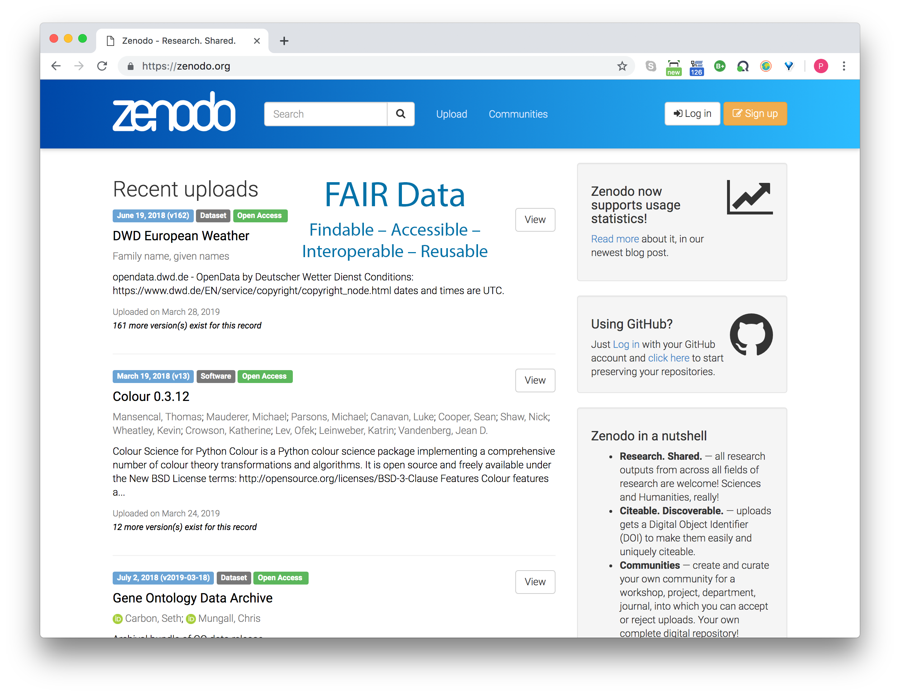
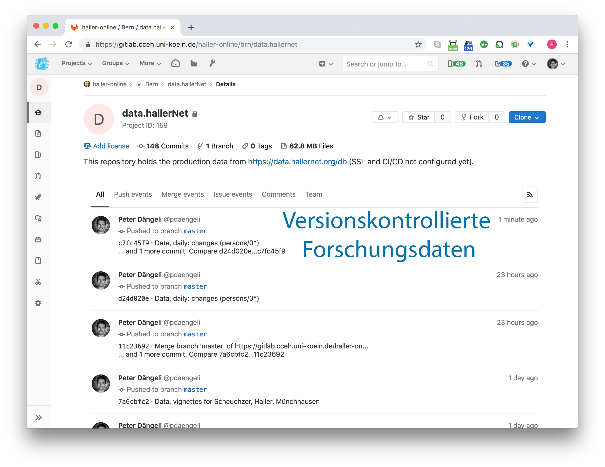
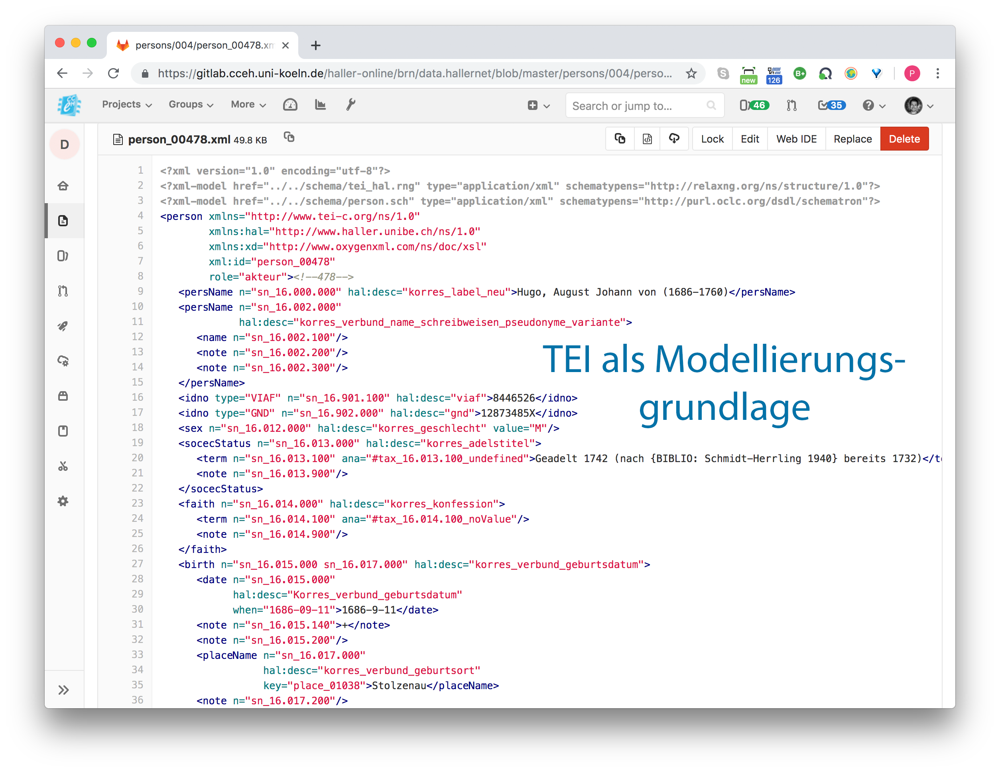
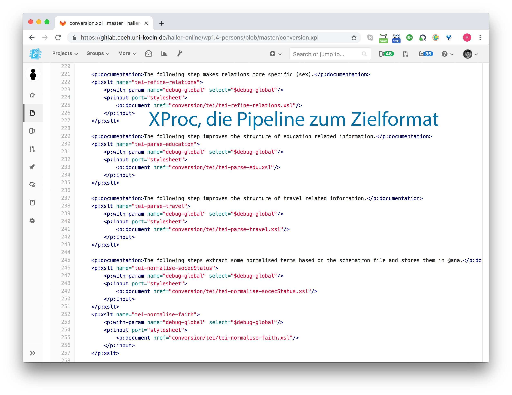
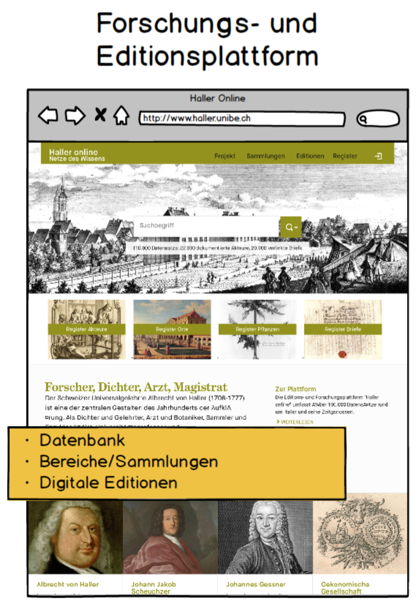
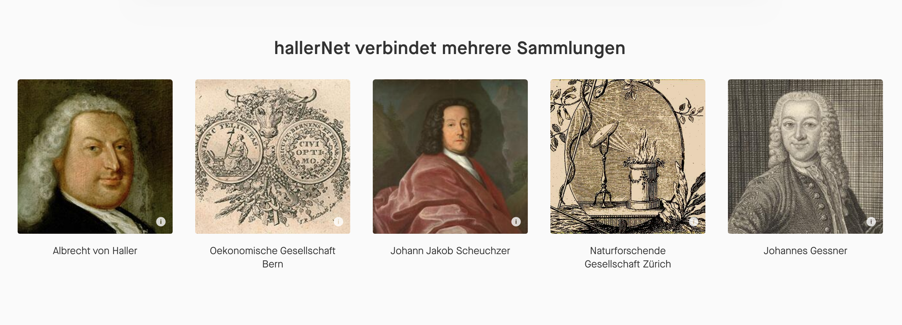
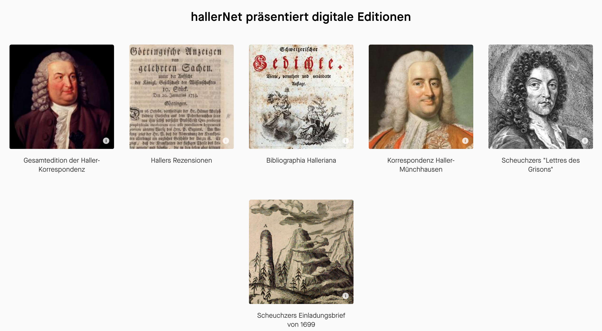

name: Titelseite class: ## Editions- und Forschungsplattform *hallerNet* <img style="position: absolute; top:180px; left: 0px; opacity: 1; z-index: 0; width: 100%;" src="images/haller.jpg"/> <div style="position: absolute; top: 420px; left: 100px;"> <p>Simona Boscani Leoni, Historisches Institut, Universität Bern</p> <p>Peter Dängeli, Cologne Center for eHumanities</p> <p>Christian Forney, Historisches Institut, Universität Bern</p> <p>Martin Stuber, Historisches Institut, Universität Bern</p> </div> <div style="position: absolute; top: 490px; right: 100px; text-align: right;"><p><em>Editions- und Forschungsplattformen zum 18. Jahrhundert<br/> Workshop zur Eröffnung von hallerNet</em></p><p>Bern, 8. Mai 2019</p></div> --- name: Launch-CCeH background-image: url(images/Launch-CCeH.png) background-size: contain --- ## Faust Professional <div id="seadragon-viewer-faust" style="width:100%; height:600px;"></div> <div style="position: absolute; top: 550px; width: 90%; opacity: 0.2;"><p><a href="https://images.hallernet.org/iiif/misc/halleronline/persons_excel.tif/full/pct:10/0/default.jpg" target="_blank">https://images.hallernet.org/iiif/misc/halleronline/persons_excel.tif/full/pct:10/0/default.jpg</a></p></div> --- ## Daten statt Worte <!-- ## Excel to the rescue --> <div id="seadragon-viewer-excel" style="width:100%; height:600px;"></div> <div style="position: absolute; top: 550px; width: 90%; opacity: 0.2;"><p><a href="https://images.hallernet.org/iiif/misc/halleronline/persons_faust.tif/full/pct:10/0/default.jpg" target="_blank">https://images.hallernet.org/iiif/misc/halleronline/persons_faust.tif/full/pct:10/0/default.jpg</a></p></div> --- ## Pipelines, Standards, Kontrolle, Öffnung     ??? FAIR * Findable * Accessible * Interoperable * Reusable --- ## Von den Daten zur Plattform <div id="haller1" class="gallery" style="position: absolute; left:50px; top: 150px; width:400px; background-color: white; padding: 5px; overflow-x: scroll; overflow-y: hidden; white-space: nowrap;"> <a href="images/Sketch-201705L.png" title="Entwurf Mai 2017">  </a> </div> <div style="position: absolute; left:420px; top: 200px; font-size: 10em;">⬀</div> <div style="position: absolute; left:420px; top: 350px; font-size: 10em;">⬂</div> <div id="haller2" class="gallery" style="z-index: 100; position: absolute; left:610px; top: 143px; background-color: black; padding: 5px; overflow-x: scroll; overflow-y: hidden; white-space: nowrap;"> <a href="images/hallerNet-Sammlungen.png" title="Sammlungen auf hallerNet, Mai 2019">  </a> </div> <div id="haller3" class="gallery" style="position: absolute; left:610px; top: 312px; background-color: black; padding: 5px; overflow-x: scroll; overflow-y: hidden; white-space: nowrap;"> <a href="images/hallerNet-Register.png" title="Register auf hallerNet, Mai 2019"> </a> </div> <div id="haller4" class="gallery" style="position: absolute; left:610px; top: 545px; background-color: black; padding: 5px; overflow-x: scroll; overflow-y: hidden; white-space: nowrap;"> <a href="images/hallerNet-Editionen.png" title="Editionen auf hallerNet, Mai 2019">  </a> </div> --- name: Schaubild background-image: url(images/Schaubild.jpg) background-size: contain ??? Im technischen Sinn keine Datenbank. --- name: Schaubild-2 background-image: url(images/Schaubild+Bilder.jpg) background-size: contain --- name: chord background-image: url(images/chord-unidirectional.png) background-size: contain ## Hoher Vernetzungsgrad --- name: dh19.hallernet.org background-image: url(images/hallernet.org-2019.png) background-size: contain ## Das Portal <h3><p>Ab sofort online:</p><a href="https://hallernet.org" target="_blank">https://hallernet.org</a></h3> <!-- Landingpage zeigen: Sammlungen, Editionen, Register --> --- ## Zusammengefasst <h3> <ul style="color: black;"> <li>Datenreichtum dank langjähriger Beforschung und Nutzung eines zentralen Werkzeugs<br/></li> <li>Ausgeprägte Vernetzung, weiter wachsend</li> <li>Daten als <em>first class citizens</em></li> </ul> </h3> <!-- name: Diskussion layout: false #Vielen Dank für die Aufmerksamkeit --> --- name: Launch background-image: url(images/Launch.png) background-size: contain